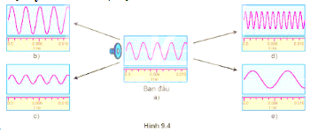

Quan sát hình 9.4 mô tả biên độ và tần số của âm qua dao động kí để trả lời các câu hỏi sau:

Hình 9.4
- Ở hình 9.4a loa phát ra âm có chu kì bằng bao nhiêu?
So với hình 9.4a:
- Ở hình nào biên độ âm lớn hơn nhưng tần số không thay đổi?
- Ở hình nào tần số âm giảm nhưng không giảm biên độ?
- Ở hình nào biên độ âm giảm nhưng không giảm tần số?